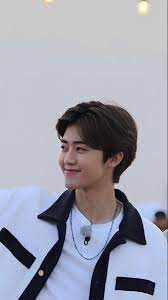

NA JAEMIN
Na Jaemin (나재민, lahir 13 Agustus 2000) adalah seorang penyanyi idola dan aktor Korea Selatan yang berada di bawah kontrak SM Entertainment. Ia adalah anggota grup vokal laki-laki NCT dan sub-unit NCT Dream. Jaemin adalah seorang putra tunggal.Dia tumbuh besar di Seoul dan bersekolah di sekolah dasar Incheon Cheong-il, kemudian Incheon Haewon Middle School, dan dilanjutkan ke School of Performing Arts Seoul. Semasa kecil, Jaemin menggeluti olahraga seluncur cepat (speed skating) dan meraih peringkat 2 di tingkat nasional.Ia juga bercita-cita menjadi seorang dokter bedah karena menonton acara Mysteries of the Human Body
Meski demikian, bakatnya di bidang hiburan tampak sejak ia menjadi bintang iklan pada tahun 2008 sebagai 'hoop boy'. Iklan ini merupakan representasi ulang dari 1988 Seoul Olympic di mana seorang anak laki-laki berlari sambil menggelindingkan hoop.Pada tahun 2013, Jaemin menjadi peserta pelatihan di SM Entertainment setelah ditemukan oleh pencari bakat saat membantu ibunya menjadi relawan untuk membagikan pamflet dan membersihkan sampah. Dengan kegiatan pelatihannya yang padat, Jaemin keluar dari School of Performing Arts Seoul untuk berkonsentrasi pada kariernya di bidang entertainment.
Pada tahun 2018, Jaemin bersama Choi Si-won, perwakilan UNICEF Korea Selatan dan anggota grup Super Junior, bekerja sama dengan UNICEF Vietnam untuk memperingati Children's Day dengan merilis video tentang kekerasan di sekolah dan berkunjung ke Vietnam untuk bertemu dengan anak-anak serta lebih lanjut membahas mengenai efek yang ditimbulkan kekerasan terhadap siswa.Di tahun yang sama, Jaemin dan sesama anggota NCT, Lucas Wong, mengikuti proyek amal "Pink Pony Campaign" yang diselenggarakan Ralph Lauren Corporation sebagai kampanye melawan kanker.Jaemin juga menghadiri acara UNICEF Korea yang bertajuk "For Every Child" sebagai representasi pemuda dan bertemu dengan Queen Mathilde of Belgium serta mantan presiden Mahkamah Pidana Internasional, Song Sang-hyun.Di tahun 2019, Jaemin dan Jeno mengunjungi Bantargebang, Bekasi, Indonesia dalam proyek "Global Dreams Come True Project: 'The Best Day'" oleh GoodNeighbors International dan Gugah Nurani Indonesia (GNI) dan ditayangkan di saluran televisi Korea Selatan, MBC TV. Dalam acara itu, Jaemin dan Jeno menjadi relawan dengan mengikuti kegiatan sehari-hari dua anak Indonesia, Slamet dan Pudori, yakni bekerja dengan memulung sampah hingga melakukan pekerjaan rumah sehari-hari. Di akhir acara, Jaemin dan Jeno memberikan hadiah pertemuan mereka untuk meringankan beban Slamet dan Pudori serta memberikan kesempatan untuk mereka kembali ke bangku sekolah.